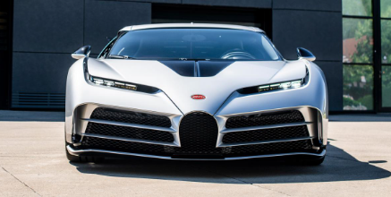
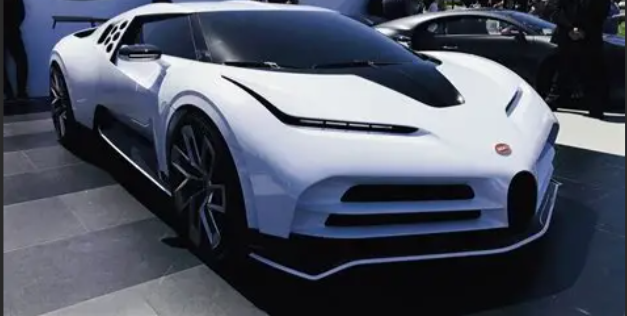

El Hiperauto Exclusivo
El Bugatti Centodieci es un homenaje al icónico EB110, combinando diseño futurista con la potencia extrema de la marca. Solo se produjeron 10 unidades, convirtiéndolo en una joya de la ingeniería automotriz.

Por Kevin Michell

El Bugatti Centodieci es un homenaje al icónico EB110, combinando diseño futurista con la potencia extrema de la marca. Solo se produjeron 10 unidades, convirtiéndolo en una joya de la ingeniería automotriz.
Inspirado en el EB110, el Centodieci celebra los 110 años de Bugatti.
Motor W16 de 1600 caballos, velocidad máxima de 380 km/h.
